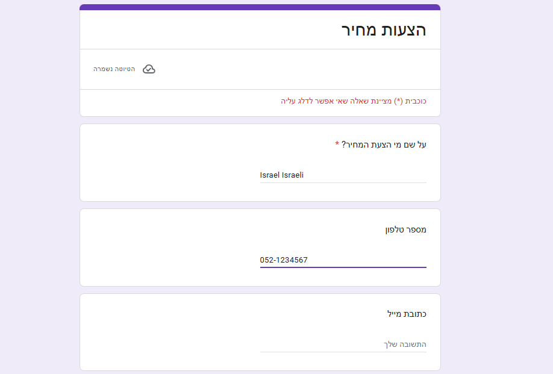
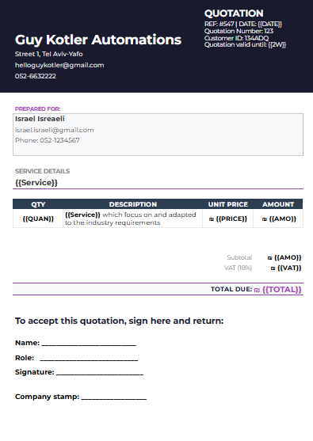

גיא קוטלר
יוצר חוויות דיגיטליות שמשלבות קוד מדויק עם עיצוב פורץ דרך. אני לוקח רעיונות מורכבים והופך אותם לממשקים שפשוט עובדים, ונראים אש.
הצעות מחיר אוטומטיות
איך הופכים תהליך של חצי שעה ללחיצת כפתור? ככה זה עובד:
1
הטמפלייט
מגדירים תבנית בסיסית המעוצבת אישית למותג שלכם.

2
הטופס
ממלאים פרטים מהר בטופס (שם, מחיר, שירות) מכל מקום.

3
הקסם עובד
מסמך חתום מופק ונשלח אוטומטית ללקוח ולמערכת שלכם.
